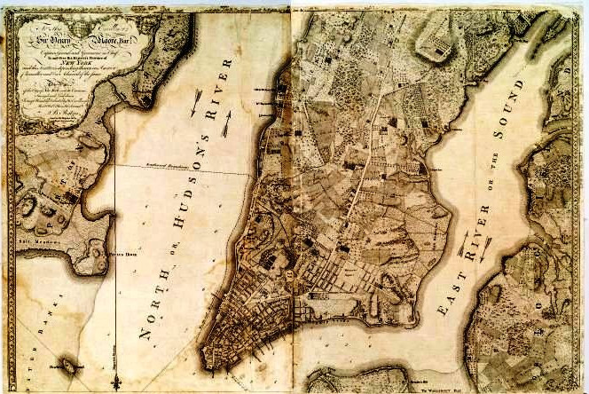
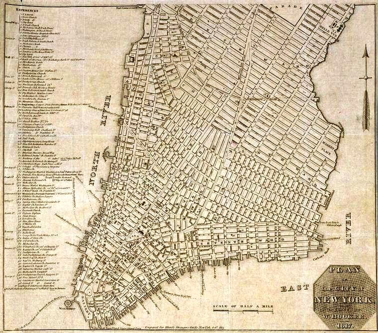
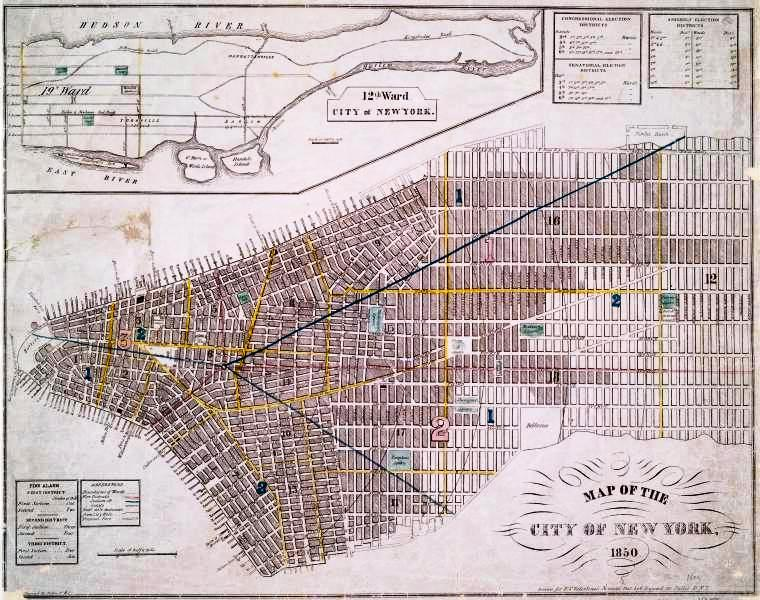

New York Harbor to 50th Street, 1776, from the British survey at the dawn of the Revolution
The island we know today was pre-destined. Beginning with Dutch colonial ambitious, interior landfill projects, and continuing by British policies to fill-in the irregular River waterfronts, expansion north became continuous to 1889. By then and forward, Manhattan's north-to-south and east-to-west Street and Avenue design was complete, its mass transportation open, and a 1,441,000 population was living and working and moving, for a nickel from New York Harbor to Spuyten Duyvil.
Three crucial elements elevated this island to be a world-class metropolis. Only a small fraction
were natural: ice-free borders—harbor, river, creek, and estuary—to reach for; as well as, a rock-solid foundation to build upon—initially, with nearby timber forests to do so. Arguably, the most important initial component was the Commissioners' Plan of 1811. Their street-and-avenue grid blueprint to pursue is one part; actually, its unrelenting implementation provided fodder for the Manhattan's unbridled growth for 77 years.
This 1811 urban plan changed much, for better and for worse (too), and much the commissioners could not have possibly foreseen. For example, continuous, surging, upward-mobile, immigrant waves; innovations, like electricity needing underground wiring; a steam- engine two-paddle clipper; an Erie Canal, creating unrelenting demand for Hudson River docks and warehouses; and mass transportation, above and below the ground.
Additionally, the 1811 plan proved flexible, enough so, to allow a uniquely American Dream, “the” Fifth Avenue, which accommodated the pronouncement—I've arrived. From its start on Washington Square (a public-health-related city council edict) creation, would be the central roadway connecting Downtown Manhattan with the old Middle Road--separating Manhattan into two portions, as well as catapulting “Fifth,” The Avenue, into a destiny aimed at prominence.
Fifth Avenue immediately captured the imagination of the city's elite. Its aristocratic appeal was an absolute—set in stone. Furthermore, social awareness, and a complementary, progressive, urbane Central Park concept reinforcing the cornerstone of “livable,” residential, mid-island, neighborhoods. This, as well as generous, civic-minded (sometimes otherwise), land grants, or city council purchases—correcting the blatant Commissioners' Plan of 1811 failure: a lack of large, open-air, common spaces throughout the island.
Given its 13.4 mile length and a greatest width of 2.3 miles, it is easy with hindsight to appreciate the advantage additional north-and-south avenues and decreased crosstown streets—with supplemental, wider, east-and-west streets would be. Yet in 1811, extensive north- and-south traffic was not the case; the demand was river to river. This practical, but rigid perpendicular “grid plan” (formally The Commissioners' Map and Survey of Manhattan Island),
ultimately accommodated the initial surveying and dividing a rugged terrain into uniform, rectangular, development blocks nearby the initial settlement.
Additionally, the design—begrudgingly, at times—resulted in the expansion of Broadway ultimately. By increasing a Native People's trail to join the amalgamated southern Broad Way, and then the mid-island Bloomingdale Road as well as seven miles north connect to the Upper Manhattan Kingsbridge Road ultimately, which provided a continuous land route from Lower Manhattan to the Albany Post Road.
Remarkable remains that the city advanced any plan at all in 1811, and that the Commissioners selected to read the future well enough to conceive a rigid grid, one flexible enough to accommodate sidewalks and curbs; motorcars and mass transit; the elevator, making a skyscraper possible, as they modestly averred as their mandated city limit, West 155th Street, ‘would contain 400,000 souls.'
For a 60,000-citizen city to project even a 400,000 future for itself, and so far north are extraordinary enough instances for a conscious vision; also, the case is made for the plan to end, where precipitous cliffs seemed impenetrable to level, given the engineering know-how, in order to accommodate the necessary grade. Who knew the right approximation would have been 1,500,000 citizens, merely 80 years hence?
The Lay of the Land
Due to established street patterns and a concentrated, population density in 1811, Lower Manhattan as well as southeast and southwest Downtown (Canal to 14th Street). Encompassing East Canal to Houston Streets, spreading east from the Bowery and west to Sixth Avenue, went undisturbed by the upcoming grid design—that would be, relatively speaking.
These vast land tracts were owned by Dutch scions, and the neighborhoods they encompass, are: the Rutgers and Rhinelander clans, Greater Chinatown; James and Oliver De Lancey, Peter and Nicholas Stuyvesant, Lower East Side; Samuel and Nicholas Bayard, Little Italy, LoLiTa, SoHo
and NoHo; Lady Sarah (nee de Lancey) and Sir Peter Warren, the Greenwich District, in particular, the Greenwich Hamlet and Abington Square, one-time Lady Warren's gardens.
Although the south-to north Avenues have been widen—several times, for the most part— these initial, easterly, family-owned street designs and westerly, haphazard laid out farm lanes overall transformed into roadways, retained their name designations as well as their integrity—from origination to wending ways to unexpected ending points.
East-to-west Streets
The island's regularly spaced Streets are set perpendicular to equally rigid, uniform Avenues. Between Eighth and 220th Streets, every east-and-west roadway runs continuously from river to river. At the Hudson and East River—the Harlem River, above East 104th Street—each must give way by dead-ending at the north-and-south riverside highways.

Lower Manhattan and Downtown, 1817, including Houston to 23rd Street
Additionally, above East 142nd Street, where the island narrows sufficiently, with no differentiation between the east and west sides, there are West streets only. What's more, the list of exceptions includes the mid-island, public open spaces. For instance, Lower Manhattan's
New York City Hall Park, Downtown's Thompkin or Union Square Park, Midtown's Central Park, or Uptown's Morningside or St. Nicholas Park.
All central island street addresses comprise odd numbers on the north side, and even numbers to the south or downtown side. Above Eighth Street the numbering starts at Fifth Avenue, with No. One and No. Two East or West, progressively increasing by two digits every 25 feet until reaching the last structures: 950 (at East 14th) and 660 (on West 114th) Streets—Manhattan's widest points.
Furthermore, the crosstown roadways consistent width (60 feet) are broken by a wider (100 feet), two-way traffic, thoroughfare, although somewhat randomly placed. These wider accesses, from south to north, are:
-
Lower Manhattan—Chambers and Worth (both a westerly traffic flow) and Canal Streets;
-
Downtown—Delancey and Grand (both easterly from the Bowery), Houston (westerly traffic flow west of Sixth Avenue), 14th and 23rd Streets;
-
Midtown—34th, 42nd, 57th and West 59th Street, (Central Park South);
-
Upper East and West Sides—72nd, 79th, 86th, and 96th Streets;
-
Uptown—East and West 106th, 110th (Central Park North), 116th, 125th, 135th Streets as well as West 145th and 155th Streets;
-
Upper Manhattan—West 165th and 181st Streets. Between West 194th and 220th Streets, both the Streets and Avenues are named, and it is too hilly for a straight wider, east-west Street. The uppermost grid is set in an oblique angle to the southern plan to accommodate the Inwood Hill and Fort George cliffs.
North-to-south Avenues
To begin, there are many consistent aspects to Manhattan's 140 to 150 feet wide thoroughfares. The few quirks are consequential, however. Every exception affects consistent street numbering, referred to as, the Lot and Block numbers, regarding the address and the nearby crosstown streets, and these are: Avenues A-D, Lexington and Madison Avenues are closer to 80 feet wide. The block lengths are unequal as well. In feet, the distances vary, as:
-
425, from Third to Lexington to Park (Fourth), as well as to Madison Avenue;
-
615 to 650, from Avenue D to Third Avenue;
-
920 feet, between Fifth and Sixth Avenues;
-
800, from Sixth to Twelfth Avenue.
The important constant elements begin with, these arteries were not designed to move the bulk of traffic as today—the emphasis was river to river. Therefore, they have been widened considerably, with changing demands.
Next, direction: Even when a name-change occurs, which they often do, the traffic direction is continuous, rarely varying. Being an island, an Avenue may deviate when approaching one of four tunnel or fourteen bridge ingress and egress ramps or turnaround plazas. Initially, each north-south roadway was two-way; though several remain. However, they are far to the east or west. The single exception is Fourth Avenue, which still accommodates traffic moving in both directions, as Park Avenue South, between East 14th and 33rd Street, and then as Park Avenue to East 97th Street.
Here's how it works, north bound traffic use: First, Third, Madison, Sixth, Eighth, and Tenth Avenues. On the other hand, the south-moving vehicles use: Second, Lexington, Fifth, Seventh, or Ninth Avenue.
Next, granted such names as First or Twelfth Avenue, and every number between, are hardly more imaginative than the East or West Street designations, especially without the benefit from adding a North or South. What is a benefit is, every address begins at its southernmost point, with No. One and opposite No. Two; also, increasing consecutively by two digits every 25 feet proceeding north.
Next, even numbers are on the east side, always, the coinciding odd number run along the west block front. However, since the Avenues begin at different points, working from one south- to-north Avenue to another and then another the numerical address won't follow uniformly. Therefore, pinpointing an exact address to its nearest cross streets is part art, not exact science.
Next, for 200-odd years, the calculation was determined using a two-step formula, which requires employing all available fingers or toes too. What's more, with the island's undulating shoreline—by broadening unevenly or narrowing sharply, even though mitigated by landfill projects—naturally unexpected exceptions crop up at the extremes, often compensating for truncated portions, and each involves a third dimension, along with additional unused digitals.
Last, the very peskiest Avenue exceptions occur wherever Streets have given names, when without a given consecutive number designation. Therefore, in addition to Lower Manhattan, essentially every neighborhood between West Canal and West Houston, and then to West 14th Street is included irregularly.
Historically speaking, The Commissioners' Plan of 1811 accepted, though tacitly, that below Houston (then, North) Street would be impractical to convert to a true grid; they wisely set their targets beyond. Without complex leases to contend with, or established housing already on preliminary laid out lanes, the perpendicular design implementation was rigorous across the vast northern hilly and swampy wastelands, ignoring farm tracts and country estates, by leveling the terrain, grading the Street and Avenue pattern, and then dividing the 191 to 201 feet wide blocks into 25 by 100 feet standard lots.
Then, There Is Broadway
Other than the truncated one-mile-long Harlem Lane, spanning West 110th to 124th Streets, the hard-and-fast gird arrangement provided not one northwest-to-southwest thoroughfare. Thus, ignoring Broadway's foremost value, cutting Manhattan's checkerboard quality by crossing nine north-and-south Avenues. Proof of its magnetic quality is that throughout Midtown, lacking a similar beneficial channel, the East Side development lagged behind the West Side, consistently.
Broadway runs the island's full length, from New York Harbor, the southernmost point, to Spuyten Duvil Creek, at West 220th Street. Throughout Canal to Eighth Street, the artery divides east from west. Broadway is then on the East Side, and after the roadway crosses Fourth Avenue, it disappears during Union Square's unique traffic divergence, and then re-emerges on East 17th Street. Broadway continues to East 23rd Street, for the subsequent five miles north, it remains on the West Side.

New York Harbor, inclusive of Midtown to 51st Street, 1850, as a Central Park was debated.
Where Broadway intersects each West Side Avenue, a major plaza forms, including:
-
Madison Square, at Fifth Avenue, between 23rd and 25th Streets;
-
Greeley and Herald Squares, at Sixth Avenue, between West 32nd and 35th Streets;
-
Times Square, at Seventh Avenue, between West 42nd and 47th Streets;
-
Columbus Circle, at Eighth Avenue, between West 58th and 60th Streets;
-
Lincoln Square, at Ninth (Columbus) Avenue, between West 63rd and 66th Streets;
-
Sherman Square, at Tenth (Amsterdam) Avenue, between West 70th and 74th Streets;
-
Straus Park, at Eleventh (West End) Avenue, between West 106th and 108th Streets.
Due north to West 168th Street, Broadway remains east of Twelfth Avenue, which is Riverside Drive and Park. Between West 191st and 201st Streets, the roadway is the only north-to-south Avenue traversing the Inwood and Fort George sheer cliffs